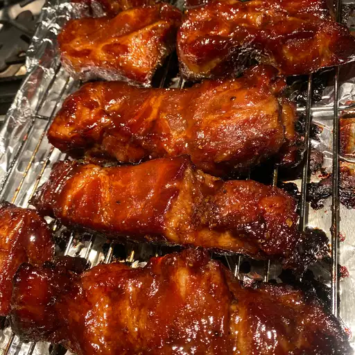

Chinese Barbecue Pork

Description
In addition to its impressive high-gloss appearance and savory taste,
this Chinese barbecue pork is quite easy to make at home — even without a fancy ceramic grill.
Ingredients
- ⅔ cup soy sauce
- ½ cup honey
- ½ cup Chinese rice wine (or sake or dry sherry)
- ⅓ cup hoisin sauce
- ⅓ cup ketchup
- ⅓ cup brown sugar
- 4 cloves garlic, crushed
- 1 teaspoon Chinese five-spice powder
- ½ teaspoon freshly ground black pepper
- ¼ teaspoon cayenne pepper
- ⅛ teaspoon pink curing salt (Optional)
- 1 (3 pound) boneless pork butt (shoulder)
- 1 teaspoon red food coloring, or as desired (Optional)
- 1 teaspoon kosher salt, or to taste
Steps
- Place soy sauce, honey, rice wine, hoisin sauce, ketchup, brown sugar, garlic, five-spice powder, black pepper, cayenne pepper, and curing salt in a saucepan. Bring to a boil on high heat; reduce heat to medium-high. Cook for 1 minute. Remove from heat. Cool to room temperature.
- Cut pork roast in half lengthwise. Cut each half again lengthwise forming 4 long, thick pieces of pork.
- Transfer cooled sauce to a large mixing bowl. Stir in red food coloring. Place pork sections into sauce and coat each piece. Cover with plastic wrap and refrigerate 4 to 12 hours.
- Preheat grill for medium heat, 275 to 300 degrees F (135 to 150 degrees C) and lightly oil the grate. Line a baking sheet with parchment paper.
- Remove sections of pork from marinade and let excess drip off. Place on prepared baking sheet. Sprinkle with kosher salt to taste.
- Transfer pork sections to grate over indirect heat on the prepared grill. Cover and cook for about 45 minutes. Brush with marinade; turn. Continue cooking until an instant-read thermometer inserted into the center reads at least 145 degrees F (63 degrees C), about 1 hour and 15 minutes more. Do not use any more marinade on cooked meat until after you boil it.
- Place leftover marinade in a saucepan; bring to a boil; let simmer for 1 minute. Remove from heat. Now you can use it to brush over the cooked pork.